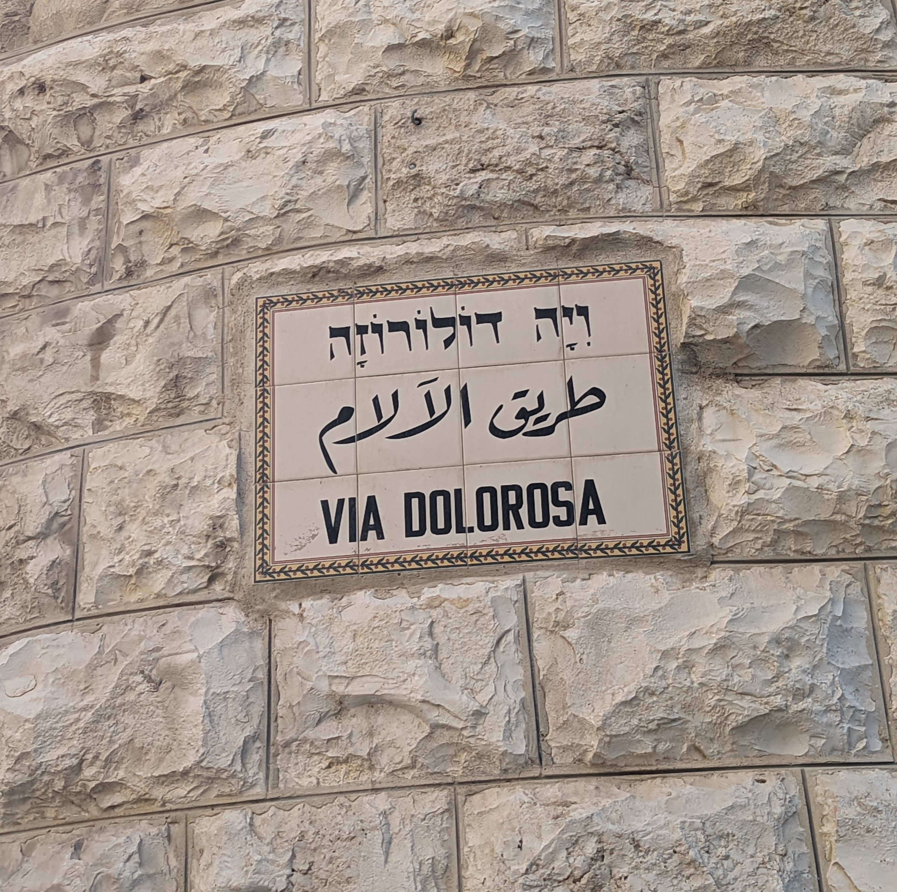
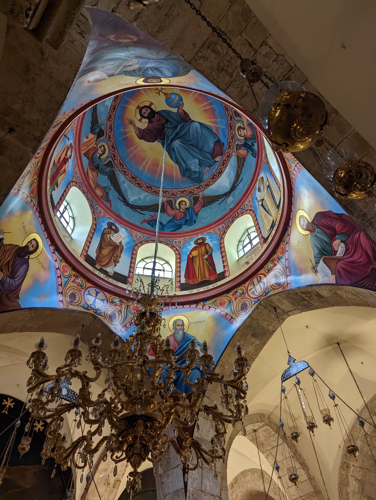
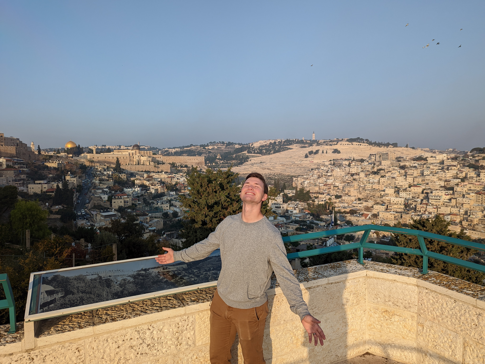
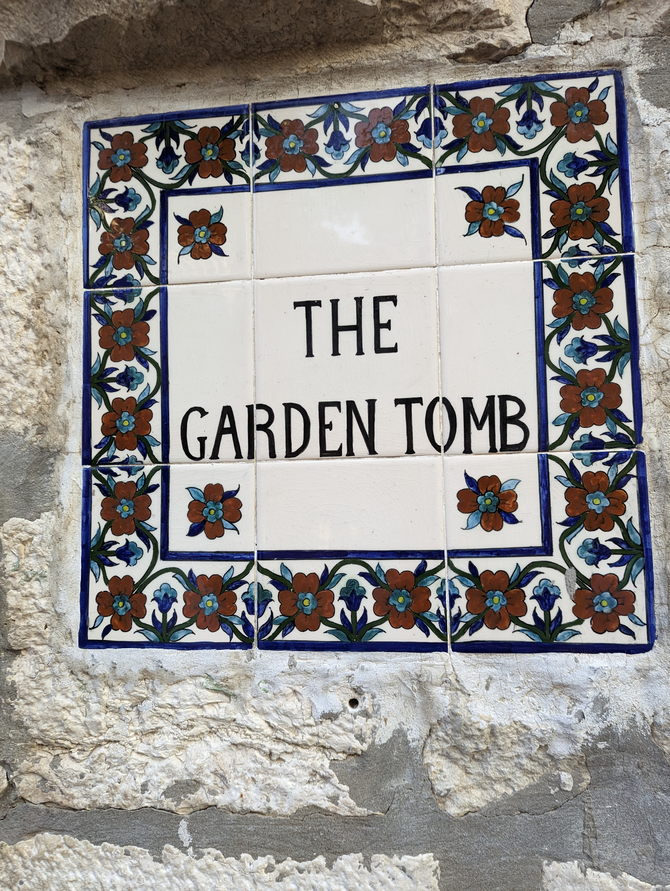
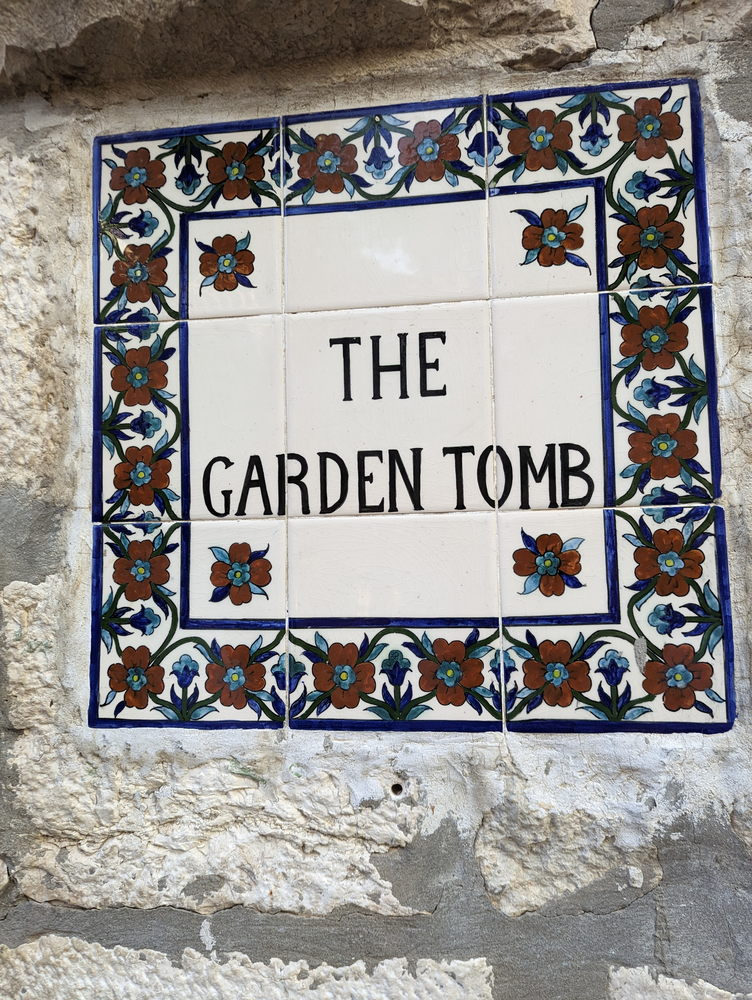

Jerusalem is an amazing, intriguing, and sometimes overwhelming place revered by many. Today, we took a tour of the old city, starting at the western wall, and then along the Via Delarosa, or way of the cross, which follows the path Jesus might have taken from the time he was condemned to when he was crucified. The path has several churches along the way, and ends with the Church of the Holy Sepulchre, the biggest church of them all
 A sign in old town Jerusalem.  The dome in the Armenian section of the Church of the Holy Sepulchre.We have visited many places in and around Jerusalem, including the Church built over where it is believed Jesus was kept immediately following his arrest, which is also the place that depicts scenes of Peter's betrayal. There was an amazing view of the old city from this church.
 My husband posing with Jerusalem in the background.The most holy and reverent-feeling places in my opinion were Gethsemane and the Garden Tomb. No one can know for sure if these places were actually where those events happened, but I know that they are an excellent visual aid when I am learning more about the last days of Christ's life.
 An olive orchard on the traditional site of Gethsemane.

The sign outside of the tomb where many believe Jesus lay and was resurrected.
An olive orchard on the traditional site of Gethsemane.

The sign outside of the tomb where many believe Jesus lay and was resurrected.